営業部門
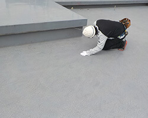
建物における現状の状態を診断し、躯体の状態から仕上げに至るまで、専門的な知識を有する技術者が調査・診断します。
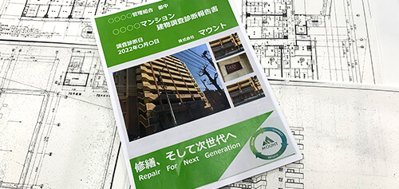
弊社の書式で報告書を作成し、建物の劣化状況等を適切に判断し、補修が必要な部位の優先順位等をご報告させて頂きます。
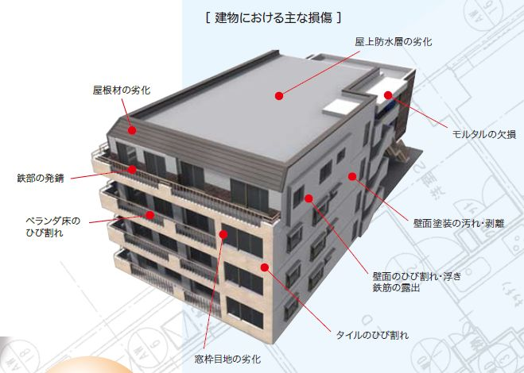
建物の劣化状況に応じて、環境やコスト面にも配慮した最適な工法をご提案。各メーカーの様々な工法・商品から、お客様のニーズに合わせた工法をご提案させて頂きます。
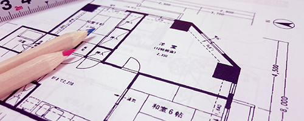
図面及び現地での実測を行い、工事項目の数量を拾い出し、適正な数量と工事金額及び工法での御見積を作成。ニーズと予算に応じた最適な工法でのお見積りをご提案いたします。
大規模修繕工事 管理部門
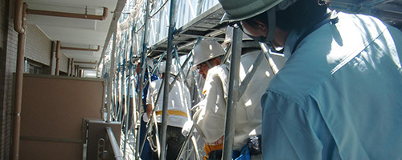
現場代理人が現場に常駐し、お客様とのコミュニケーションを取りながら、安全・品質・工程管理を行い工事を進めていきます。
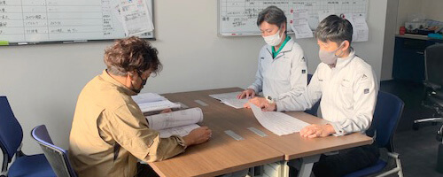
現場代理人が常駐しない現場には、担当者を選定し定期的に巡回し、工事の打合せを行い、安全・品質・工程管理を行います。
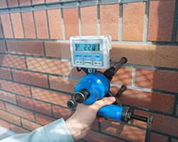
お客様にご満足いただけるように、各工程ごとや工事完了後に検査を行い、不良部があれば直ちに是正致します。
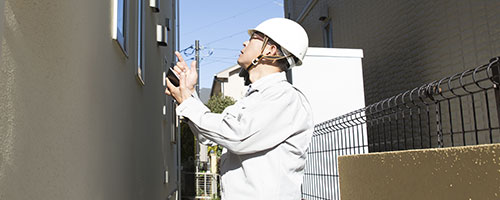
工事の詳細や保証内容等をデータで管理し、定期点検で修繕箇所の経年状況を記録。自社雇用の職人が在籍しているため、台風や地震等の自然災害による漏水・損壊事故にも迅速に対応いたします。
大規模修繕工事 工事部門
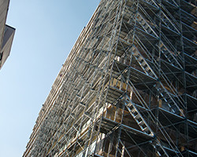
足場の組立・解体は事故が最も多いため、安全を最優先に工事を進めます。足場の設置が困難な箇所にはゴンドラやチェアー等を使用し、作業員が安全に作業できる環境づくりに配慮しています。
仮設工事の施工事例を見る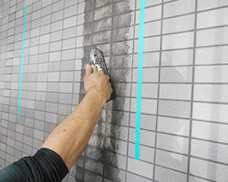
外壁の剥落等の事故が起きないように、外壁の不良部を調査後、タイルの張替や下地の浮き部等の補修を行います。
下地・タイル補修工事の施工事例を見る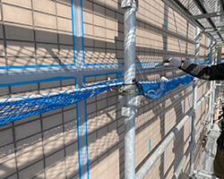
外壁やサッシ廻りの目地等からの漏水を防ぐためのシーリング工事です。外壁の種類によって使用材料が異なるため、注意が必要です。
シーリング工事の施工事例を見る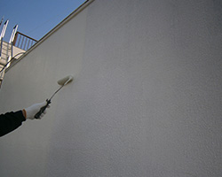
建物の美観を取り戻すための塗装工事。遮熱塗料・フッ素系・ウレタン系・シリコン系など様々な塗料があり、既存塗料との相性を見極める専門的な調査のうえで施工します。
塗装工事の施工事例を見る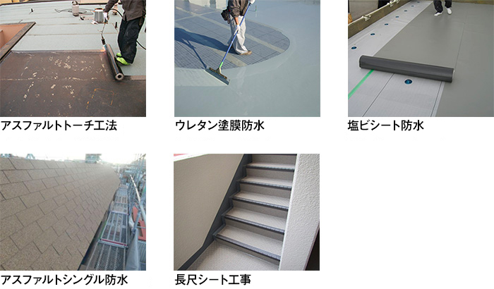
設立当初から数多くの防水工事を手掛けてきました。建物を次世代に残す一番大事な事は防水工事にあると考えています。様々な施工方法に対応できる経験豊かな専門技術者が多数在籍し、その場所・環境に最も適した施工方法をご提供致します。
防水工事の施工事例を見る※工法は一例です。建物の状態に合わせて最適な工法をご提案します。
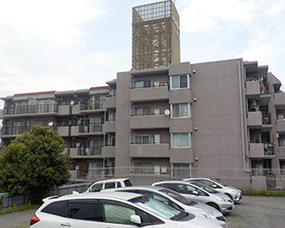
改修前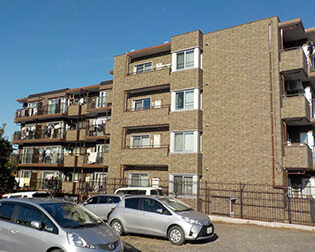
改修後一般的には戸建ての外壁で、住宅の外壁材の主流となっているサイディング張り工法。弊社ではサイディング大手のニチハさんと共同施工で、マンション修繕初のサイディング張り工法を実現しました。
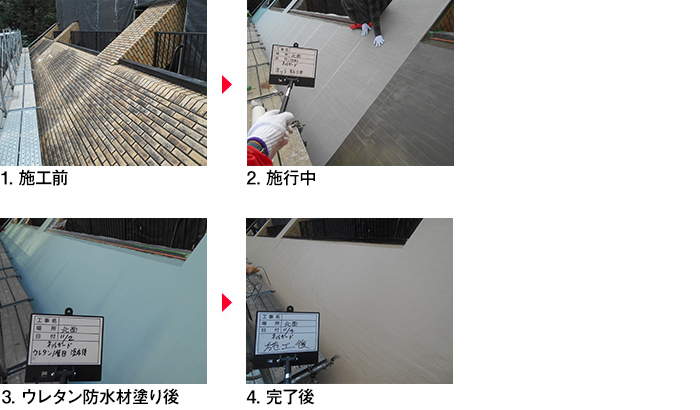
斜壁のタイル部からの漏水に対し、タイルの剥落防止を行うピンネット工法の後、アスファルトシングル葺き工法をご提案・施工。斜壁のある建物は斜壁部からの漏水が非常に多く、防水経験豊富なスタッフが現場調査を行いますので、ご安心してご依頼ください。
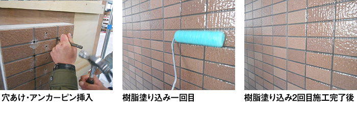
特殊専用アンカーにてタイル・張付けモルタル層を躯体に固定し、塗膜強度が高く耐久性に優れた、透明度の高い特殊1成分形ウレタン樹脂にてタイル面を被膜。意匠性を保持したまま剥落を防止する工法です。
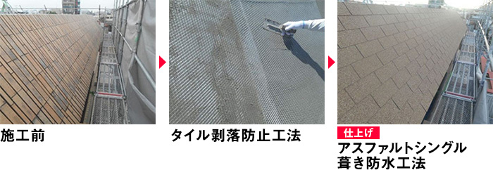
1成分形ウレタン塗膜防水材とポリエステルメッシュで構成され、タイル張り仕上げの斜壁に必要な防水機能と剥落防止機能を併せ持つ工法。日射の影響を受けやすい斜壁に適した材料選定でご提案します。
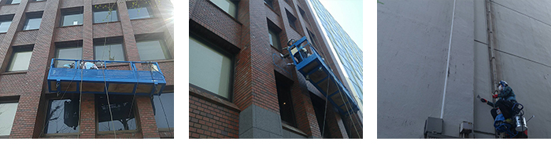
足場の設置が困難な箇所や部分的な補修、足場設置前の建物調査・診断に活用。危険箇所や劣化状況を事前に把握することで、大規模修繕工事や部分補修等の計画に役立てることができます。